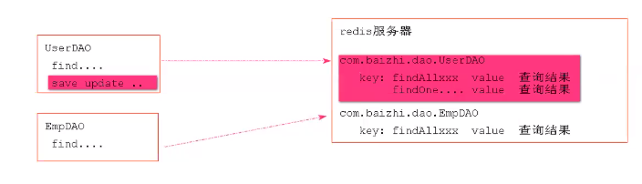

视频链接
一、分布式缓存
1、什么是缓存(Cache)
1.redis 的数据都在内存中，缓存就是计算机内存中的一段数据。
2、内存中数据的特点
1.读写快 2.断电立即丢失
3、缓存解决了什么问题
1.提高了网站吞吐量提高网站的运行效率
2.核心解决了 数据库的访问压力
4、既然缓存能提高效率，那项目中所有的数据加入缓存，岂不是更好
注意：使用缓存时，一定是数据库中数据极少发生更改，更多的用于查询这种情况
5、本地缓存和分布式缓存
本地缓存：存在应用服务器内存中的数据称之为本地缓存（local cache）
分布式缓存：存在当前应用服务器内存之外数据称之为分布式缓存（distribute cache）
集群：将一种服务的多个节点放在一起共同使用对系统提供服务过程称之为集群
分布式：有多个不同服务集群功能对系统提供服务，这个系统称之为分布式系统（distribute system）
比如：四个厨师，都是炒菜的，就是集群；有两个炒菜，两个切菜的，就是分布式
6、利用mybatis 自身本地缓存 结合 redis 实现分布式缓存
1.mybatis中应用级 缓存（二级缓存），SQLSessionFactory 级别缓存，所有会话共享
2.如何开启（二级缓存）
3.查看mybatis 中 cache 标签缓存实现
- Mybatis默认使用 ：org.apache.ibatis.cache.impl.PerpetualCache
4、可以使用自定义
6、缓存在项目中应用

a.项目中表查询之间没有任何关联查询使用现在的这种缓存方式没有任何问题
b.现有缓存方式在表连接查询过程中—定存在间题?
2.在mybatis的缓存中如何要解决关联关系时更新缓存信息的问题?
a.<cache-ref /> // 用来来将多个具有关联关系查询缓存放在一起处理
1
2
3
4
5
6
7
8
9
10
11
12
13
14
15
16
17
18
19
20
21
22
23
24
25
26
27
28
29
30
31
32
33
34
35
36
37
38
39
40
41
42
43
44
45
46
47
48
49
50
51
52
53
54
55
56
57
58
59
60
61
62
63
64
65
66
67
68
69
70
71
72
73
74
75
76
77
78
79
80
81
82
83
84
85
86
87
88
89
90
91
92
| package com.wj.cache;
import com.wj.Util.ApplicationContextUtils;
import org.apache.ibatis.cache.Cache;
import org.springframework.data.redis.core.RedisTemplate;
import org.springframework.data.redis.serializer.StringRedisSerializer;
import java.util.concurrent.locks.ReadWriteLock;
public class MyCache implements Cache {
private final String id;
public MyCache(String id) {
System.out.println("cache id:" + id);
this.id = id;
}
@Override
public String getId() {
return this.id;
}
@Override
public void putObject(Object key, Object value) {
System.out.println("key=======put=========" + key.toString());
System.out.println("value==============" + value);
RedisTemplate redisTemplate = (RedisTemplate) ApplicationContextUtils.getBean("redisTemplate");
redisTemplate.setKeySerializer(new StringRedisSerializer());
redisTemplate.setHashKeySerializer(new StringRedisSerializer());
redisTemplate.opsForHash().put(id.toString(),key.toString(),value);
}
@Override
public Object getObject(Object key) {
System.out.println("key======get==========" + key.toString());
RedisTemplate redisTemplate = (RedisTemplate) ApplicationContextUtils.getBean("redisTemplate");
redisTemplate.setKeySerializer(new StringRedisSerializer());
redisTemplate.setHashKeySerializer(new StringRedisSerializer());
Object object = redisTemplate.opsForHash().get(id.toString(), key.toString());
return object;
}
@Override
public Object removeObject(Object key) {
System.out.println("根据指定的key 删除缓存");
return null;
}
@Override
public void clear() {
System.out.println("清空缓存~~~");
RedisTemplate redisTemplate = (RedisTemplate) ApplicationContextUtils.getBean("redisTemplate");
redisTemplate.setKeySerializer(new StringRedisSerializer());
redisTemplate.setHashKeySerializer(new StringRedisSerializer());
redisTemplate.delete(id.toString());
}
@Override
public int getSize() {
return getRedisTemplate().opsForHash().size(id.toString()).intValue();
}
@Override
public ReadWriteLock getReadWriteLock() {
return null;
}
private RedisTemplate getRedisTemplate(){
RedisTemplate redisTemplate = (RedisTemplate) ApplicationContextUtils.getBean("redisTemplate");
redisTemplate.setKeySerializer(new StringRedisSerializer());
redisTemplate.setHashKeySerializer(new StringRedisSerializer());
return redisTemplate;
}
}
|
7、缓存的优化
对放入 redis中的key进行优化，key的长度 太长
-1276398425:3262336399:com.wj.dao.UserDao.findAll:0:2147483647:select * from user:SqlSessionFactoryBean
尽可能短一些
算法 MD5：
特点:1.一切文件字符串等经过md5处理之后都会生成32位16进制字符串
2.不同内容文件经过md5进行加密，加密结果—定不―致
3.相当内容文件多次经过mdl5生成结果始终一致
放的时候 key进行md5
取得时候，md5 再取
 wechat
wechat alipay
alipay